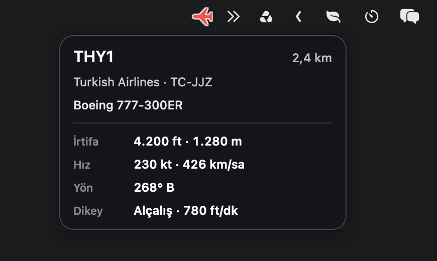
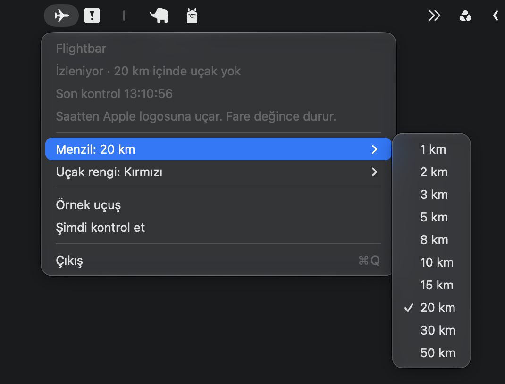

Uluer Solutions · macOS only
The aircraft overhead, in the menu bar.
Flightbar lists the aircraft inside a radius you choose. Select one for its details. A flight across the menu bar, from the clock toward the Apple logo, is optional and off unless you turn it on.
How it works
Click the aircraft icon in the menu bar to open the menu. On first launch, choose a place.
-
A place, or Location Services
Enter a city, a postal code, or a latitude and longitude. Or choose Location Services. That prompt appears only if you choose it, and Flightbar comes forward first so macOS can show it. The app works without Location Services.
-
The list
Open the menu for the aircraft inside the range. Select a row to open the details card: callsign, registration, type, altitude (including geometric altitude when the feed sends it), speed, track, heading, squawk, and the database flags.
-
The flight, if you want it
Fly across the menu bar is off unless you turn it on. When it is on, an icon leaves the clock and travels toward the Apple logo. The pointer still pauses it.
-
The menu
Range, color, and the flag filter are here. Show sample aircraft opens a demo card and says so. Check now refreshes the data. The aircraft count and a notification are optional and off until you turn them on.
On screen
The images were taken from the running app. The icon color and the range follow the choice in the menu.


Range and color
Both change from the menu. The choice is remembered.
Range
The radius an aircraft has to enter. The default is 3 km.
- 1 km
- 2 km
- 3 km
- 5 km
- 8 km
- 10 km
- 15 km
- 20 km
- 30 km
- 50 km
Aircraft color
The color of the icon in the menu bar. The default is white.
- White
- Yellow
- Orange
- Red
- Green
- Cyan
- Blue
- Purple
Privacy
-
Location Services is optional
Distance is calculated on this Mac. A city or postal code is sent to Apple’s geocoder to become coordinates. Typing latitude and longitude skips that. The aircraft query still sends those coordinates to the public feed so it knows which area to return.
-
Public flight data
Aircraft are read from adsb.lol. If that does not respond, adsb.fi is used. There is no account, sign-up, or key. Flightbar does not ask to control this computer.
-
Names stay local
Airline and aircraft type names come from the catalog inside the app. It does not connect to another account.